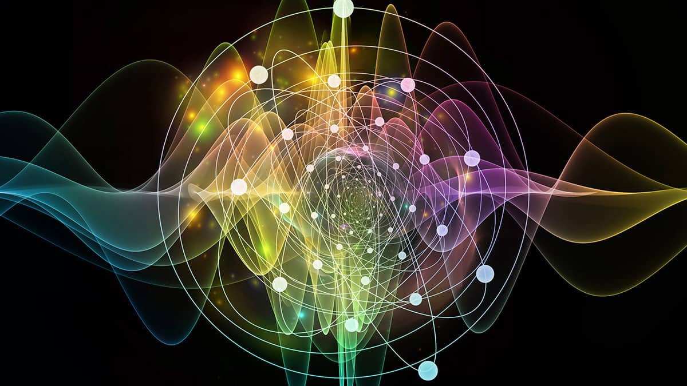
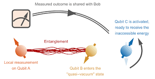

Quantum physics is the branch of science that deals with the behavior of the smallest particles in the universe, such as electrons, photons, and atoms. Unlike classical physics, which describes the world in deterministic terms, quantum mechanics is based on probabilities. Particles exhibit wave-particle duality, meaning they can act both as particles and as waves, depending on how they are measured. This is demonstrated in the famous double-slit experiment, where electrons create an interference pattern when not observed but behave like particles when measured. A fundamental concept of quantum physics is superposition, where a particle can exist in multiple states at once until observed. When measured, this superposition collapses to a definite state, a phenomenon described by the Copenhagen interpretation. Another key principle is quantum entanglement, where two particles become linked such that the state of one instantly affects the other, no matter how far apart they are. This seemingly "spooky action at a distance" puzzled even Einstein.
Quantum mechanics is also governed by Heisenberg's uncertainty principle, which states that one cannot simultaneously know both the exact position and momentum of a particle with absolute precision. The mathematical framework for quantum mechanics is built on wave functions, described by the Schrödinger equation, which determines how quantum states evolve over time. Quantum mechanics has led to groundbreaking technologies like semiconductors, lasers, and quantum computing, where qubits leverage superposition and entanglement to perform complex calculations exponentially faster than classical computers. However, interpretations of quantum mechanics remain debated, with alternatives like the Many-Worlds Interpretation, which suggests that every quantum decision leads to branching universes. Despite its counterintuitive nature, quantum physics has been experimentally verified countless times, proving that the universe at its most fundamental level operates in ways that challenge our everyday experience of reality